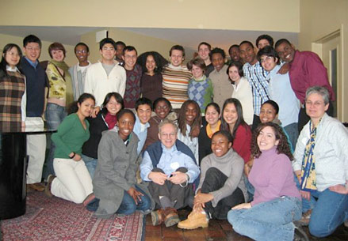
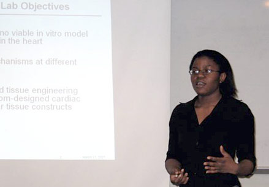

News Archives : 2007 : Richard Losick "FEEDS" Studies in Science
by Thomas Torello
August 13, 2007

Professor Richard Losick (front row, center), Professor Catherine Dulac (far right), Dr. Michelle McMurray ’91 (second row, next to Professor Dulac) and the HHMI research students at the Endicott House.

Chimdimnma Chinaza (Chi Chi) Esiamai describing her work, which examines how pacing of cardiomyocytes is influenced by their shape. Chi-Chi works in Professor Kit Parker’s lab at the DEAS.
On Friday, March 16th, thirty Harvard undergraduates participating in MCB Professor Richard Losick’s HHMI-funded "Freshmen from Economically and Educationally Disadvantaged backgrounds in Science" (FEEDS) initiative headed to MIT’s Endicott House in Dedham, MA for a weekend research retreat. Losick, a Howard Hughes Medical Institute Professor and the Maria Moors Cabot Professor of Biology in MCB, developed the FEEDS program in 2002 to involve freshman from disadvantaged science backgrounds in long-term, inquiry-based research projects.
"The idea behind FEEDS is to give highly motivated students from disadvantaged backgrounds a chance to experience the excitement and enthusiasm that comes from doing real science," says Losick, adding that many students confuse doing science with memorizing facts and taking exams. "Instead of the students having to sell pizza or flip burgers for work study or summer employment, I arrange for them to become involved in a long-term, inquiry based research project in the laboratory of a Harvard faculty member, using HHMI funds to relieve them of work-study obligations." In many cases, students remain involved in their research lab throughout their four years at Harvard, and ideally their work culminates in a senior thesis.
According to Egle Cekanaviciute, ’07, "If it wasn’t for Professor Losick’s program, I would be forced to work at any job that would pay me. The HHMI program gives me the opportunity to get paid doing what I love to do." Egle, who has been in the program since 2002 and will start a PhD program in neuroscience at Stanford next fall, gave a research talk describing the thesis work she is doing in MCB Professor Venki Murthy’s lab studying the effect that a particular ion channel has on dendrite morphology and synaptic strength.
In addition to getting students involved in research projects, Losick’s program gets students engaged in a community of scientists. Seniors Juliet Girard ’07, Thomas Noriega ’07, and Kevin Koo ’07, who took the lead in organizing a series of social activities and games to introduce this year’s batch of freshmen to the group, commented that "Professor Losick’s program definitely creates a sense of community – our cohort is very close-knit."
And indeed, a sense of community was apparent at the retreat. In addition to student talks and social activities, two special guest lecturers and an alumnus spoke at the retreat. Michelle McMurray ’91, MD/PhD, gave the keynote address entitled "The role of science in global health. How scientists can apply their basic science skills to impact health around the globe." Michelle, who worked in Professor Losick’s lab in the late 1980’s and is currently the head of the Health, Biomedical Science and Society Initiative at the Aspen Institute, was impressed with the level of talent in the group. "I’ve worked with other students that are interested in science, and this group is particularly strong – each and every one of these students is amazingly talented." HHMI Investigator and Higgins Professor of Molecular and Cellular Biology Catherine Dulac, who presented a talk entitled "Sex and Smell: the Science of the Senses," agreed – "I am so impressed with both your enthusiasm and the quality of the work you’re doing – I wish I could have each and every one of you working in my lab," commented Dulac at the beginning of her talk.
Sawalla Guseh ’06, who was a participant in the FEEDS program when he was at the College and won a Hoopes prize for his senior thesis, gave a talk describing his work on lung development and regenerative medicine. Sawalla commented that his involvement in the FEEDS program was an important part of his undergraduate experience, adding that "I was taught science in the classroom, but I learned to do science in Doug Melton's lab."
There is no doubt that Professor Losick’s program inspires students to remain involved in sciences. "So far, my experience at Harvard has turned out to be far better than I imagined, in large part because I became involved in a research project in my first week," said David Sengeh ’10, who comes from Sierra Leone and is working in Professor David Edwards lab studying how water content influences the stability of bacteria, which ultimately impacts the efficacy of vaccine-based treatments. "Before I started, I had the image that Harvard students were mostly taught by senior upperclassmen and grad students – but there are many opportunities to work directly with faculty here," he added.
Each year, Professor Losick works with the Admissions office to identify members of the incoming class who might be suitable candidates for his program, and invites 6-10 students to participate. According to Professor Losick, about half of the students at Harvard that declare an interest in a science concentration end up concentrating in another field. In contrast, of the 42 students who have participated in the FEEDS program, 39 remained science concentrators and many pursue careers in science (graduate studies in the sciences, medical school, or continued laboratory research for one or more years) upon graduation. "These figures speak for themselves, and highlight how getting students involved in research early on increases the likelihood that they’ll succeed and remain involved in science," said Losick.